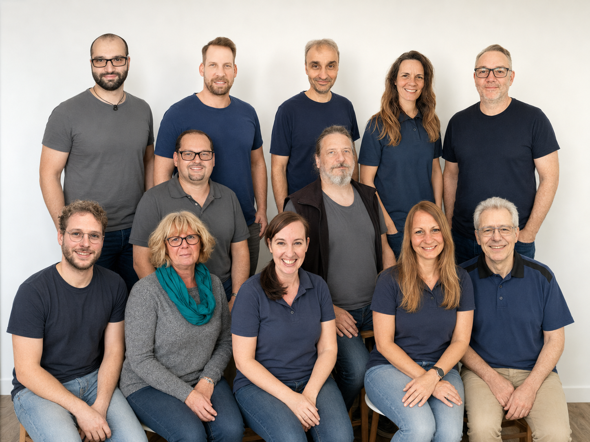
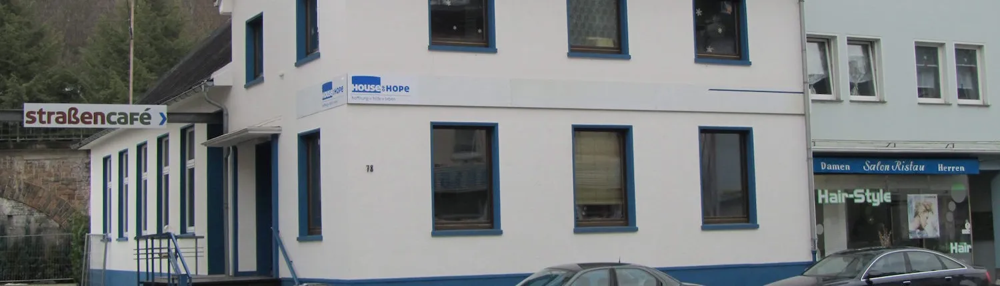

Hoffnung.
Hilfe.
Leben.
Wir begegnen benachteiligten und hilfesuchenden Menschen mit praktischer Hilfe und der Liebe Gottes – in Südwestfalen und darüber hinaus.


Hoffnung, Hilfe und
Gottes Liebe – konkret
Hands of Hope ist ein christlicher diakonischer Dienst mit Sitz in Südwestfalen. Wir glauben daran, dass Glaube und praktische Nächstenliebe zusammengehören – und leben das jeden Tag.
- Gegründet 2002 von Achim Paul und Wolfgang Kremer
- Getragen von hauptamtlichen, ehrenamtlichen Mitarbeitern sowie FSJ- und BFD-Kräften
- Gemeinnützig organisiert als Hands of Hope gGmbH
- Vernetzt im Netzwerk mission:mensch
Fünf Wege, Menschen zu helfen
Hands of Hope gliedert sich in fünf Arbeitsbereiche, die gemeinsam benachteiligten Menschen ein neues Leben ermöglichen.
Rehabilitation
Unser einjähriges Programm in Neunkirchen richtet sich an Menschen, die ihr Leben nicht mehr alleine meistern können. Wir begleiten sie auf dem Weg zurück in ein selbstständiges, erfülltes Leben.
Mehr erfahren →
Dienstleistungen
In unseren gemeinnützigen Arbeitsbetrieben – Garten- & Landschaftsbau, Forstarbeiten, Haushaltsauflösungen – bereiten wir Rehabilitanden auf den Berufsalltag vor.
Mehr erfahren →
Straßencafé
Unser wöchentliches Straßencafé bringt benachteiligte Menschen durch Andacht, Musik und eine warme Mahlzeit mit Gottes Liebe in Berührung. Jeder ist willkommen.
Mehr erfahren →
Prävention
In Schulen und Einrichtungen helfen wir Schülerinnen und Schülern, dysfunktionale Bewältigungsstrategien zu erkennen und gesunde Alternativen zu entwickeln.
Mehr erfahren →
Jugendhilfe Bald
Das Jugend-Therapiehaus Steckenstein entsteht als Wohneinrichtung für Jugendliche während ihrer Therapiezeit – ein Ort der Begleitung und Stabilisierung für fünf junge Menschen.
Mehr erfahren →